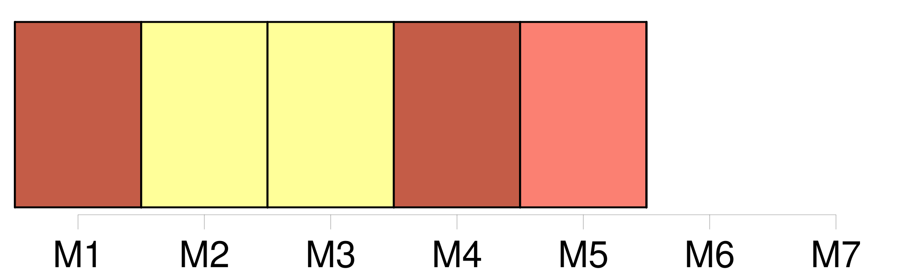
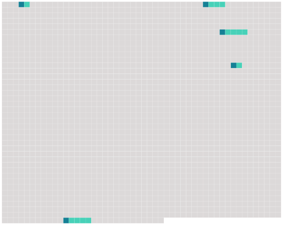

Longueur nb maillons : 5 mentions |
  |
Elle habitait avec [ses parents] la belle propriété de St-Jean, qui domine la jonction de l'Arve avec le Rhône, en aval de Genève.
M. L. Perey a raconté déjà comment [les Pictet de St-Jean] voisinaient familièrement avec l'illustre philosophe, et les papiers de Rosalie et de sa famille, ont fourni à l'aimable biographe beaucoup de détails sur ce qui se passait aux Délices, et à Ferney. [8 phrases] Samuel quitta le service au moment de son mariage et vint habiter chez [les parents de sa femme] [6 phrases] Bien souvent après son mariage, elle remonta sur les planches édifiées à Ferney et prit un rôle dans l'une ou l'autre des pièces composées par l'ami de [ses parents] [65 phrases]
Beaucoup d'années plus tard, quand Rosalie pourra revenir sans émotion sur l'événement qui la priva de sa mère, elle dira : |
 |
La ressource peut être téléchargée sur la page Ortolang
Si vous avez des questions ou vous voyez des erreurs, merci d'envoyer un mail à silvia.federzoni89@gmail.com
Site développé par S. Federzoni (contact)